IIT M FOUNDATION DIPLOMA FN EXAM QDF2 28 Apr 2024 - 28 Apr 2024
MLT End Term16 questions50 marks6 SA · 6 MSQ · 4 MCQFoundation / Diploma / forenoon / QDF2
Elapsed 00:00
Q1SA3 marks
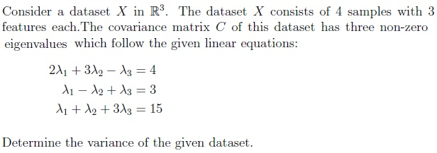
Q2SA3 marks
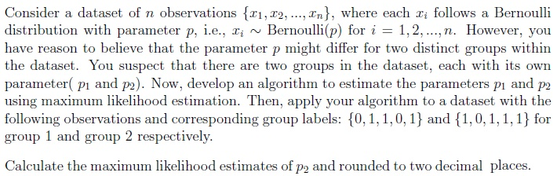
Q3SA3 marks
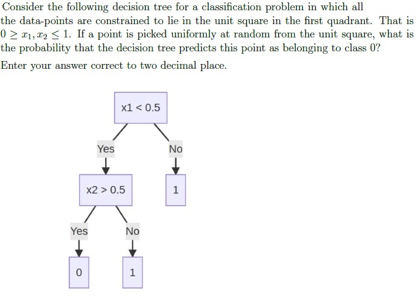
Q4SA3 marks
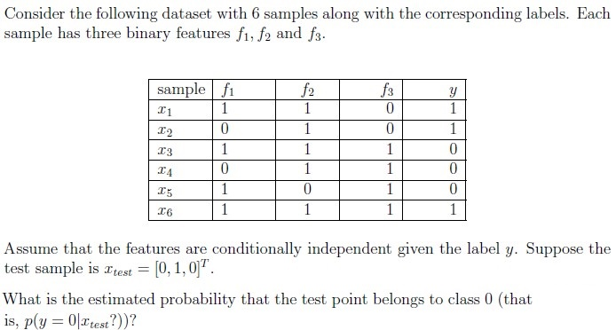
Q5SA3 marks
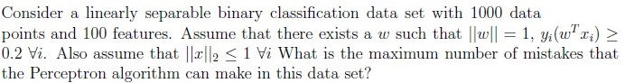
Q6SA3 marks
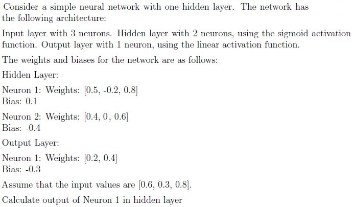
Q7MCQ3 marks
Consider a dataset with two features (Feature 1 and Feature 2) exhibiting a perfect positive correlation (1). If you apply k-means clustering with k = 3, what is the most likely arrangement of cluster centers that minimizes the within-cluster sum of squares (WCSS)?
An equilateral triangle centered around the mean of the data.
Cluster centers positioned along a straight line.
A triangle with two acute angles, positioned strategically within the datadistribution.
A right-angled triangle with one center at the origin.
Q8MCQ3 marks
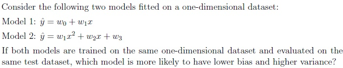
Model 1
Model 2
Both models are equally sensitive to outliers
Insufficient data
Q9MCQ3 marks
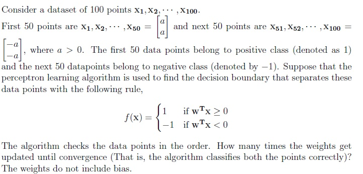
1
2
4
It oscillates and never converges
Q10MCQ3 marks
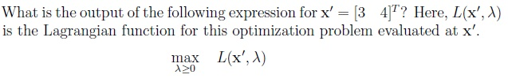
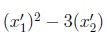
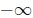
Q11MSQ3 marksselect all that apply
Which of the following are true about the kernel function? Assume that the dataset X is mean centered.
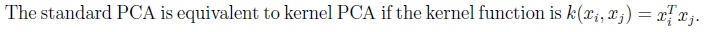
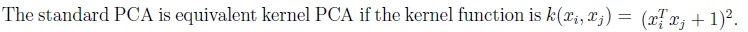
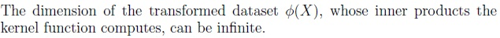
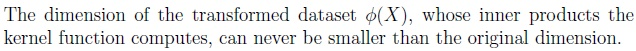
Q12MSQ3 marksselect all that apply
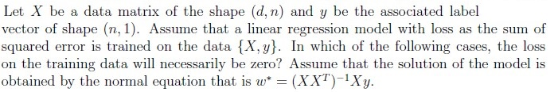
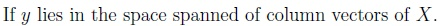
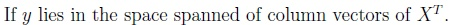
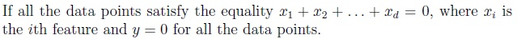
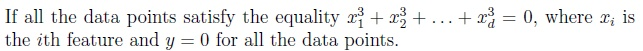
Q13MSQ3 marksselect all that apply
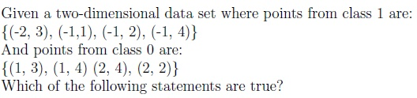
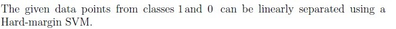
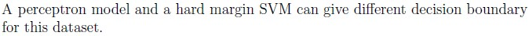
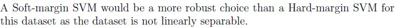
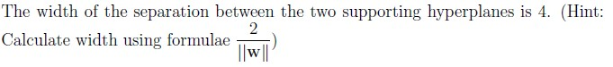
Q14MSQ3 marksselect all that apply
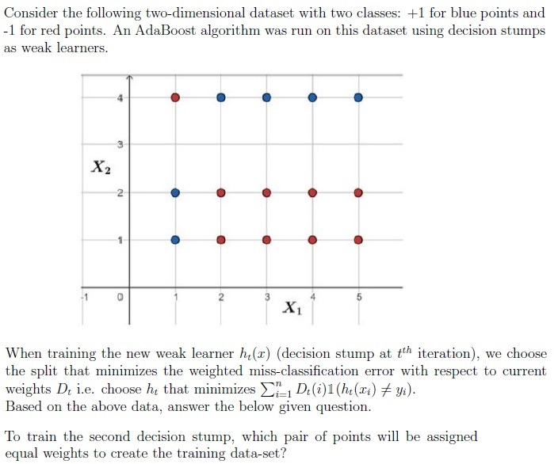
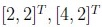
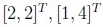
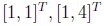
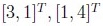
Q15MSQ4 marksselect all that apply
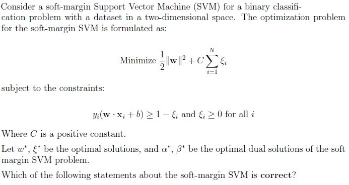
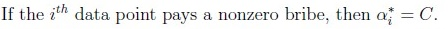
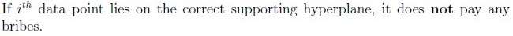
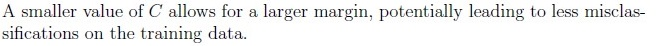
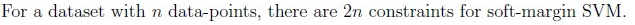
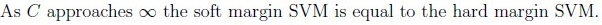
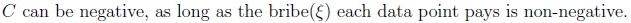
Q16MSQ4 marksselect all that apply
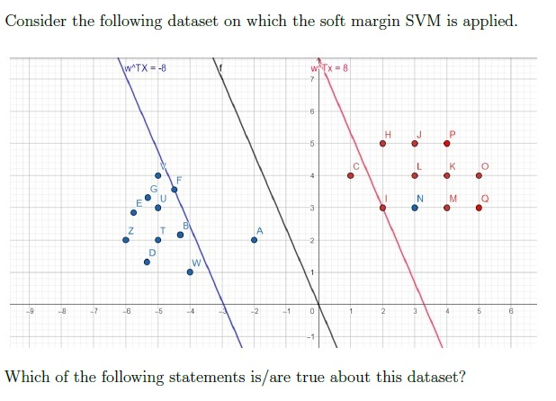
Points {F, I} are the only support vectors.
Points {A, N} are a subset of support vectors.
Points {F, A, C, I} are the only support vectors.
Points except {F, A, C, I, N} do not play any role in determining optimal weightvector.
Points except {F, A, C, I} do not play any role in determining optimal weightvector.